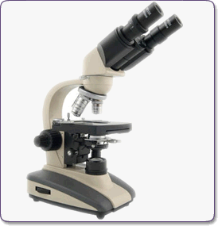
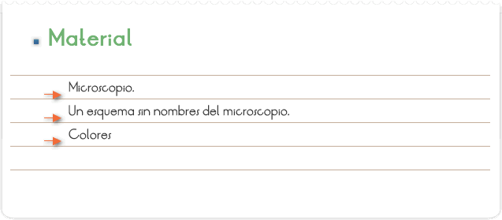
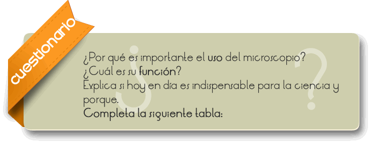
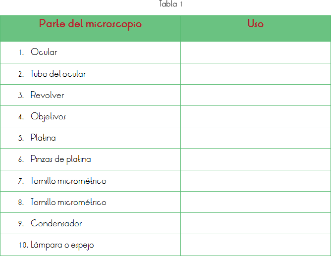

El microscopio, de micro- (pequeño) y scopio (observar), es un instrumento que permite observar objetos que son demasiado pequeños para ser vistos a simple vista. El tipo más común y el primero que se inventó es el microscopio óptico. Se trata de un instrumento óptico que contiene una o varias lentes que permiten obtener una imagen aumentada del objeto y que funciona por refracción. La ciencia que investiga los objetos pequeños utilizando este instrumento se llama microscopía.
Microscopio óptico
El tipo de microscopio más utilizado es el microscopio óptico, que se sirve de la luz visible para crear una imagen aumentada del objeto. El microscopio óptico más simple es la lente convexa doble con una distancia focal corta. Estas lentes pueden aumentar un objeto hasta 15 veces. Por lo general se utilizan microscopios compuestos, que disponen de varias lentes con las que se consiguen aumentos mayores. Algunos microscopios ópticos pueden aumentar un objeto por encima de las 2.000 veces.
El microscopio compuesto consiste en dos sistemas de lentes, el objetivo y el ocular, montados en extremos opuestos de un tubo cerrado. El objetivo está compuesto de varias lentes que crean una imagen real aumentada del objeto examinado. Las lentes de los microscopios están dispuestas de forma que el objetivo se encuentre en el punto focal del ocular. Cuando se mira a través del ocular se ve una imagen virtual aumentada de la imagen real. El aumento total del microscopio depende de las longitudes focales de los dos sistemas de lentes.

Que el alumno conozca las partes que forman el microscopio así como los sistemas que forman cada uno.

1. Con ayuda del profesor el alumno irá conociendo cada nombre de las partes que forman el microscopio.
2. Se le mostrará con el microscopio del laboratorio a que sistema pertenece cada parte.
3. Utilizando el esquema sin nombres, el profesor irá diciendo el color que se le asignará a cada sistema. (Se sugiere que tenga su propio esquema ya coloreado a la hora de la explicación, indicando el color azul para el sistema óptico, el rojo para el sistema mecánico y el amarillo para el de iluminación.)
4. Posteriormente pedirá a los alumnos realizan lo mismo en el suyo.


El microscopio es un aparato de precisión que requiere de ciertos cuidados. Gracias al uso del microscopio el estudio de los seres vivos ha sido más sencillo, este aparato nos permite ver observar detalles que ha simple vista no lo son. El microscopio más sencillo es la lupa, y consta de una sola lente de aumento; también se le conoce como el microscopio simple. El microscopio compuesto, como el del autolab, funciona con varias lentes y, dependiendo del modelo, logra el aumento de hasta 2000 veces.
Hoy en día es un material indispensable en el área científica, ya que gracias a el se han podido hacer varios descubrimientos de microorganismos causantes de enfermedades.